git
简介
git是一个免费开源的版本控制系统，有效管理项目开发的源码。
解决的问题：
- 开发中代码会存在多个版本，将代码在多个版本之间进行切换
- 在不影响现行开发工作的情况下对代码进行维护
- 开发时，某段代码被多人修改时，处理代码的冲突问题
分布式版本控制系统的客户端并不只提取最新版本的文件快照，而是把代码仓库完整地镜像下来。这么一来，任何一处协同工作用的服务器发生故障，事后都可以用任何一个镜像出来的本地仓库恢复。
远程的git仓库和本地的本质没有什么区别，不同点在于远程的仓库可以被多人同时访问使用，方便协同开发。实际工作中，git的服务器通常由公司搭建内部使用或是购买一些公共的私有git服务器。
学习阶段直接使用一些开放的公共git仓库。目前常用的库有两个：GitHub和Gitee（码云）
下载和配置
Git无脑下载
下载Git后，首先要配置个人用户名称和电子邮件地址。这两条配置很重要，每次Git提交时都会引用这两条信息，说明是谁提交了更新，所以会随更新内容一起被永久纳入历史记录：
git config --global [user.name] |
基本使用
文件状态
被git管理的文件有三种状态：
- 暂存，表示文件修改已经保存，但是尚未提交到git仓库
- 未修改，表示磁盘中的文件与git仓库的文件相同，没有修改
- 已修改，表示磁盘中文件已被修改，和git仓库中文件不同
可以通过git status查看文件的状态
新添加的文件处于未跟踪状态（未被git管理）:
- 未跟踪->暂存：git add
<filename> - 暂存->未修改：git commit -m “xxx” 将暂存的文件存储到仓库中
- 未修改->修改：修改代码后，转为修改状态
- 修改->暂存：git add
<filename>
git add *: 将未被跟踪或者已修改的文件全部转换为暂存状态
git commit -a -m “xxx”: 提交所有已修改的文件（未跟踪的文件不会提交）
将文件提交至远程仓库：
- 在总文件夹中右键选择
git bash here，初始化git。
$ git init |
- 连接远程仓库
$ git remote add origin "仓库地址" |
- 上传文件
$ git add "文件名"/git add * 把工作区某个文件提交至暂存区/把工作区所有文件提交至暂存区 |
从远程仓库下载文件：fork、clone
fork
fork包含了原来的仓库所有内容，如分支、Tag、提交
如果想将你的修改合并到原项目中时，可以通过的 Pull Request 把你的提交贡献回 原仓库
clone
clone，译为克隆，它的作用是将文件从远程代码仓下载到本地，从而形成一个本地代码仓
执行 clone命令后，会在当前目录下创建一个名为 xxx的目录，并在这个目录下初始化一个 .git 文件夹，然后从中读取最新版本的文件的拷贝
默认配置下远程 Git 仓库中的每一个文件的每一个版本都将被拉取下来
使用fork和clone
当你在 github发现感兴趣开源项目的时候，可以通过点击 github仓库中右上角 fork标识的按钮，如下图：
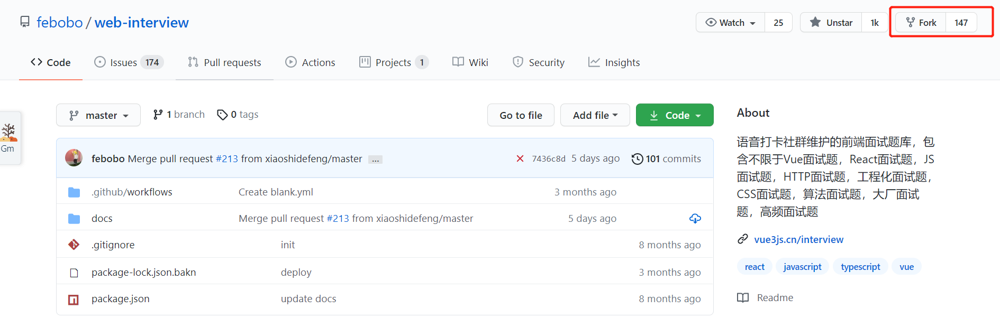
点击这个操作后会将这个仓库的文件、提交历史、issues和其余东西的仓库复制到自己的 github仓库中，而你本地仓库是不会存在任何更改
然后你就可以通过 git clone对你这个复制的远程仓库进行克隆,在 github中，开源项目右侧存在 code按钮，点击后则会显示开源项目 url信息，如下图所示：通过 git clone xxx则能完成远程项目的下载
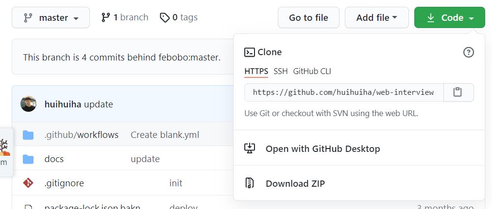
后续更改任何东西都可以在本地完成，如 git add、git commit一系列的操作，然后通过 push命令推到自己的远程仓库
如果希望对方接受你的修改，可以通过发送 pull requests给对方，如果对方接受。则会将你的修改内容更新到仓库中
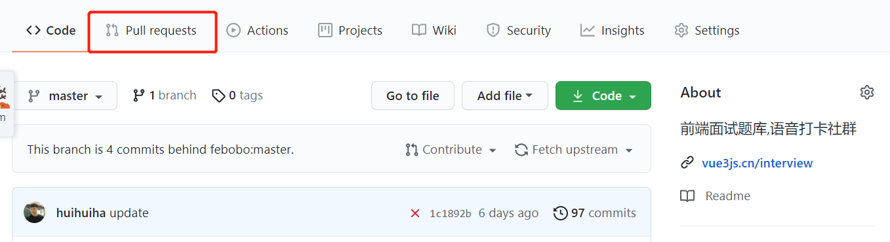
整体流程如下图：

fork和clone的区别
其三者区别如下：
- fork 只能对代码仓进行操作，且 fork 不属于 git 的命令，通常用于代码仓托管平台的一种“操作”
- clone 是 git 的一种命令，它的作用是将文件从远程代码仓下载到本地，从而形成一个本地代码仓
Git常用命令
git的操作可以通过命令的形式如执行，日常使用就如下图6个命令即可
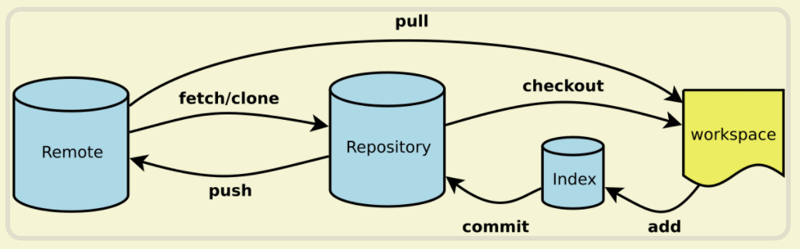
实际上，如果想要熟练使用，超过60多个命令需要了解，下面则介绍下常见的的 git命令
有哪些
启动
一个 git项目的初始有两个途径，分别是：
- git init [project-name]：创建或在当前目录初始化一个git代码库
- git clone url：下载一个项目和它的整个代码历史
日常基本操作
在日常工作中，代码常用的基本操作如下：
- git init 初始化仓库，默认为 master 分支
- git add . 提交全部文件修改到缓存区
- git add <具体某个文件路径+全名> 提交某些文件到缓存区
- git diff 查看当前代码 add后，会 add 哪些内容
- git diff –staged查看现在 commit 提交后，会提交哪些内容
- git status 查看当前分支状态
- git pull <远程仓库名> <远程分支名> 拉取远程仓库的分支与本地当前分支合并
- git pull <远程仓库名> <远程分支名>:<本地分支名> 拉取远程仓库的分支与本地某个分支合并
- git commit -m “<注释>” 提交代码到本地仓库，并写提交注释
- git commit -v 提交时显示所有diff信息
- git commit –amend [file1] [file2] 重做上一次commit，并包括指定文件的新变化
关于提交信息的格式，可以遵循以下的规则：
- feat: 新特性，添加功能
- fix: 修改 bug
- refactor: 代码重构
- docs: 文档修改
- style: 代码格式修改, 注意不是 css 修改
- test: 测试用例修改
- chore: 其他修改, 比如构建流程, 依赖管理
分支操作
git在存储文件时，每一次代码的提交都会创建一个与之对应的节点，git就是通过一个一个节点来记录代码的状态。节点会构成树状结构，会存在分支，默认情况下仓库只有一个分支master。在使用git时，可以创建多个分支，分支之间相互独立，在一个分支上修改代码不会影响其它分支。在开发中，创建自己的分支，最终合并到主分支上
- git branch 查看本地所有分支
- git branch -r 查看远程所有分支
- git branch -a 查看本地和远程所有分支
- git merge <分支名> 合并分支
- git merge –abort 合并分支出现冲突时，取消合并，一切回到合并前的状态
- git branch <新分支名> 基于当前分支，新建一个分支
- git checkout –orphan <新分支名> 新建一个空分支（会保留之前分支的所有文件）
- git branch -D <分支名> 删除本地某个分支
- git push <远程库名> :<分支名> 删除远程某个分支
- git branch <新分支名称> <提交ID> 从提交历史恢复某个删掉的某个分支
- git branch -m <原分支名> <新分支名> 分支更名
- git checkout <分支名> 切换到本地某个分支
- git checkout <远程库名>/<分支名> 切换到线上某个分支
- git checkout -b <新分支名> 把基于当前分支新建分支，并切换为这个分支
远程同步
远程操作常见的命令：
- git fetch [remote] 下载远程仓库的所有变动
- git remote -v 显示所有远程仓库
- git pull [remote] [branch] 拉取远程仓库的分支与本地当前分支合并
- git fetch 获取线上最新版信息记录，不合并
- git push [remote] [branch] 上传本地指定分支到远程仓库
- git push [remote] –force 强行推送当前分支到远程仓库，即使有冲突
- git push [remote] –all 推送所有分支到远程仓库
撤销
- git checkout [file] 恢复暂存区的指定文件到工作区
- git checkout [commit] [file] 恢复某个commit的指定文件到暂存区和工作区
- git checkout . 恢复暂存区的所有文件到工作区
- git reset [commit] 重置当前分支的指针为指定commit，同时重置暂存区，但工作区不变
- git reset –hard 重置暂存区与工作区，与上一次commit保持一致
- git reset [file] 重置暂存区的指定文件，与上一次commit保持一致，但工作区不变
- git revert [commit] 后者的所有变化都将被前者抵消，并且应用到当前分支
reset：真实硬性回滚，目标版本后面的提交记录全部丢失了
revert：同样回滚，这个回滚操作相当于一个提价，目标版本后面的提交记录也全部都有
存储操作
你正在进行项目中某一部分的工作，里面的东西处于一个比较杂乱的状态，而你想转到其他分支上进行一些工作，但又不想提交这些杂乱的代码，这时候可以将代码进行存储
- git stash 暂时将未提交的变化移除
- git stash pop 取出储藏中最后存入的工作状态进行恢复，会删除储藏
- git stash list 查看所有储藏中的工作
- git stash apply <储藏的名称> 取出储藏中对应的工作状态进行恢复，不会删除储藏
- git stash clear 清空所有储藏中的工作
- git stash drop <储藏的名称> 删除对应的某个储藏
git pull 和 git fetch
git fetch是将远程主机的最新内容拉到本地，用户在检查了以后决定是否合并到工作本机分支中
而 git pull 则是将远程主机的最新内容拉下来后直接合并，即：git pull = git fetch + git merge，这样可能会产生冲突，需要手动解决
在我们本地的 git文件中对应也存储了 git本地仓库分支的 commit ID和 跟踪的远程分支的 commit ID，对应文件如下：
- .git/refs/head/[本地分支]
- .git/refs/remotes/[正在跟踪的分支]
使用 git fetch更新代码，本地的库中 master的 commitID不变
但是与 git上面关联的那个 orign/master的 commit ID发生改变
这时候我们本地相当于存储了两个代码的版本号，我们还要通过 merge去合并这两个不同的代码版本
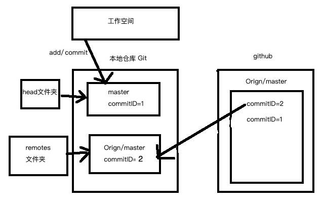
也就是 fetch的时候本地的 master没有变化，但是与远程仓关联的那个版本号被更新了，接下来就是在本地 merge合并这两个版本号的代码
相比之下，使用 git pull就更加简单粗暴，会将本地的代码更新至远程仓库里面最新的代码版本，如下图：
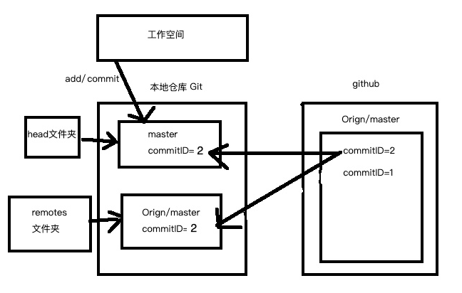
用法
一般远端仓库里有新的内容更新，当我们需要把新内容下载的时候，就使用到 git pull或者 git fetch命令
fetch
用法如下：
git fetch <远程主机名> <远程分支名>:<本地分支名> |
例如从远程的 origin仓库的 master分支下载代码到本地并新建一个 temp分支
git fetch origin master:temp |
如果上述没有冒号，则表示将远程 origin仓库的 master分支拉取下来到本地当前分支
这里 git fetch不会进行合并，执行后需要手动执行 git merge合并，如下：
pull
两者的用法十分相似，pull用法如下：
git pull <远程主机名> <远程分支名>:<本地分支名> |
例如将远程主机 origin的 master分支拉取过来，与本地的 branchtest分支合并，命令如下：
git pull origin master:branchtest |
git pull origin master:branchtest |
同样如果上述没有冒号，则表示将远程 origin仓库的 master分支拉取下来与本地当前分支合并
区别
相同点：
- 在作用上他们的功能是大致相同的，都是起到了更新代码的作用
不同点：
- git pull是相当于从远程仓库获取最新版本，然后再与本地分支merge，即git pull = git fetch + git merge
- 相比起来，git fetch 更安全也更符合实际要求，在 merge 前，我们可以查看更新情况，根据实际情况再决定是否合并
git rebase 和 git merge
在使用 git 进行版本管理的项目中，当完成一个特性的开发并将其合并到 master 分支时，会有两种方式：
- git merge
- git rebase
git rebase 与 git merge都有相同的作用，都是将一个分支的提交合并到另一分支上，但是在原理上却不相同
git merge
将当前分支合并到指定分支，命令用法如下：
git merge xxx |
通过 git merge将当前分支与 xxx分支合并，产生的新的 commit对象有两个父节点
如果“指定分支”本身是当前分支的一个直接子节点，则会产生快照合并
举个例子，bugfix分支是从 master分支分叉出来的，如下所示：
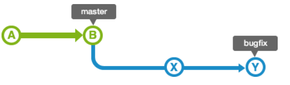
合并 bugfix分支到 master分支时，如果 master分支的状态没有被更改过，即 bugfix分支的历史记录包含 master分支所有的历史记录
所以通过把 master分支的位置移动到 bugfix的最新分支上，就完成合并
如果 master分支的历史记录在创建 bugfix分支后又有新的提交，如下情况：
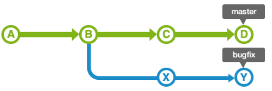
这时候使用 git merge的时候，会生成一个新的提交，并且 master分支的 HEAD会移动到新的分支上，如下：
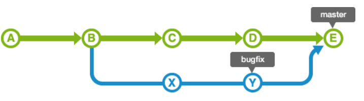
从上面可以看到，会把两个分支的最新快照以及二者最近的共同祖先进行三方合并，合并的结果是生成一个新的快照
git rebase（变基）
将当前分支移植到指定分支或指定 commit之上，用法如下：
git rebase -i <commit> |
同样，master分支的历史记录在创建 bugfix分支后又有新的提交，如下情况：
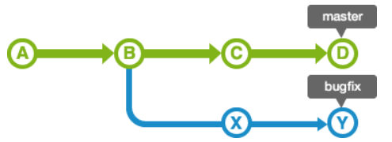
通过 git rebase，会变成如下情况：
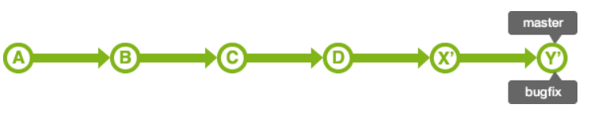
在移交过程中，如果发生冲突，需要修改各自的冲突，如下：
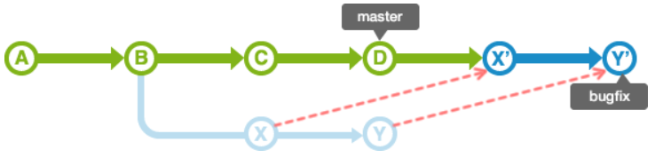
rebase之后，master的 HEAD位置不变。因此，要合并 master分支和 bugfix分支
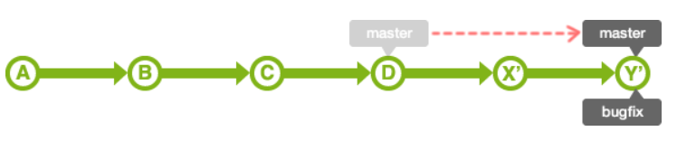
从上面可以看到，rebase会找到不同的分支的最近共同祖先，如上图的 B
然后对比当前分支相对于该祖先的历次提交，提取相应的修改并存为临时文件（老的提交 X和 Y也没有被销毁，只是简单地不能再被访问或者使用）
然后将当前分支指向目标最新位置 D, 然后将之前另存为临时文件的修改依序应用
区别
从上面可以看到，merge和 rebasea都是合并历史记录，但是各自特性不同：
merge
通过 merge合并分支会新增一个 merge commit，然后将两个分支的历史联系起来
其实是一种非破坏性的操作，对现有分支不会以任何方式被更改，但是会导致历史记录相对复杂
rebase
rebase会将整个分支移动到另一个分支上，有效地整合了所有分支上的提交
主要的好处是历史记录更加清晰，是在原有提交的基础上将差异内容反映进去，消除了 git merge所需的不必要的合并提交
冲突
当 Git无法自动合并分支时，就必须首先解决冲突，解决冲突后，再提交，合并完成
解决冲突就是把 Git合并失败的文件手动编辑为我们希望的内容，再提交
冲突如何产生？
所谓冲突就是两个开发者对同一个文件同一个位置做出了不同内容的修改，因此就产生了冲突。
一般冲突的产生发生在两个分支进行合并时或者是从远程仓库拉取代码到本地时。
但是归根结底，冲突产生的原因还是：对同一个文件同一个位置做出了不同内容的修改。从而导致冲突发生。
比如：master 分支和 hot-fix 分支上都修改了代码， 那么在合并分支的时候就会发生冲突。
【第一步】在 hot-fix 分支上增加如下代码，并且提交。
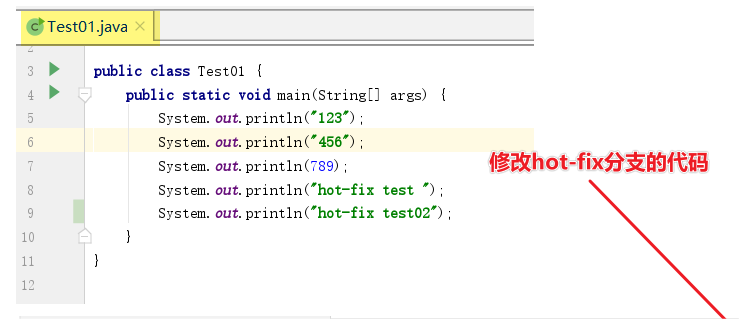
【第二步】在master 分支上同样的地方增加如下代码，并且提交。
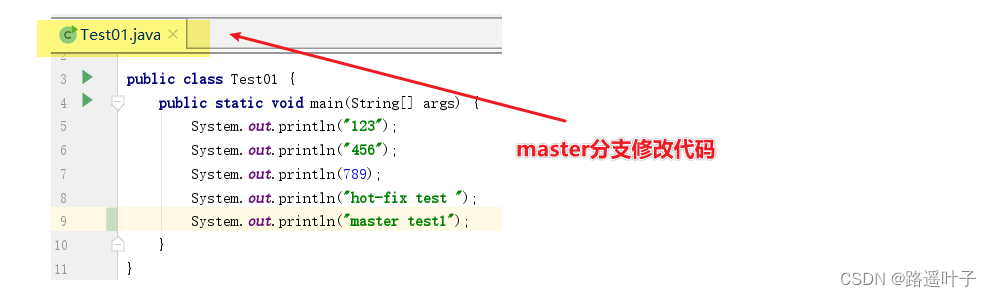
【第三步】 我们现在站在 master 分支上合并 hot-fix 分支， 就会发生代码冲突。
【第四步】手动解决冲突，合并代码。
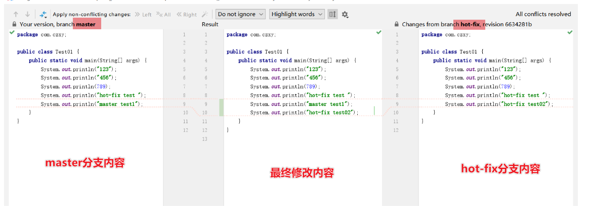
代码冲突就解决了， 提交本地库，查看修改结果：
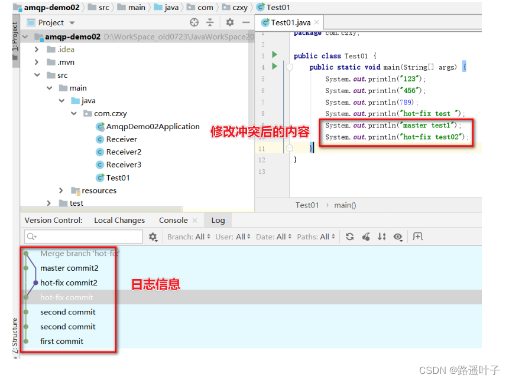
git reset 和 git revert
git reset
reset用于回退版本，可以遗弃不再使用的提交
执行遗弃时，需要根据影响的范围而指定不同的参数，可以指定是否复原索引或工作树内容
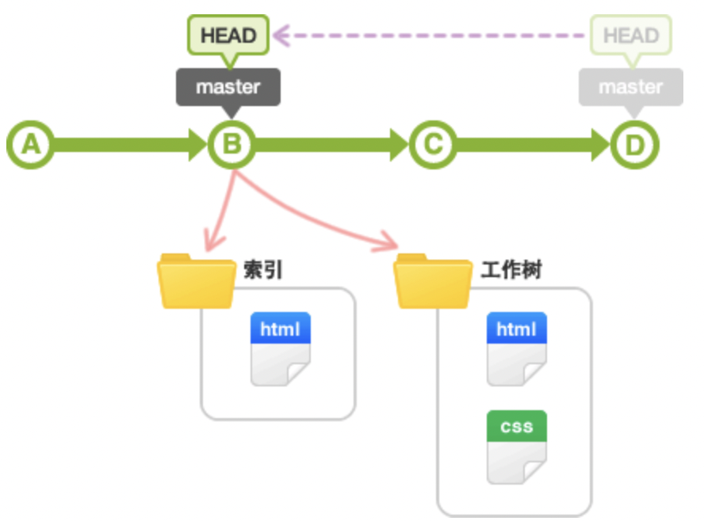
git revert
在当前提交后面，新增一次提交，抵消掉上一次提交导致的所有变化，不会改变过去的历史，主要是用于安全地取消过去发布的提交

区别
撤销（revert）被设计为撤销公开的提交（比如已经push）的安全方式，git reset被设计为重设本地更改
因为两个命令的目的不同，它们的实现也不一样：重设完全地移除了一堆更改，而撤销保留了原来的更改，用一个新的提交来实现撤销
两者主要区别如下：
- git revert是用一次新的commit来回滚之前的commit，git reset是直接删除指定的commit
- git reset 是把HEAD向后移动了一下，而git revert是HEAD继续前进，只是新的commit的内容和要revert的内容正好相反，能够抵消要被revert的内容
- 在回滚这一操作上看，效果差不多。但是在日后继续 merge 以前的老版本时有区别
git revert是用一次逆向的commit“中和”之前的提交，因此日后合并老的branch时，之前提交合并的代码仍然存在，导致不能够重新合并
但是git reset是之间把某些commit在某个branch上删除，因而和老的branch再次merge时，这些被回滚的commit应该还会被引入
- 如果回退分支的代码以后还需要的情况则使用
git revert， 如果分支是提错了没用的并且不想让别人发现这些错误代码，则使用git reset